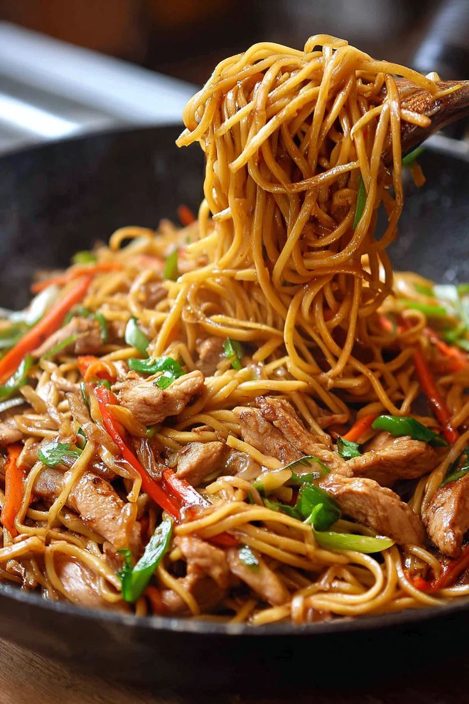

Stir-fry noodles with chicken is a quick and flavorful dish made by tossing noodles with vegetables, chicken, and a savory sauce. It is cooked over high heat, which gives the dish a slightly smoky taste and keeps the vegetables crisp and fresh.
This dish is perfect for a quick meal, combining soft noodles with juicy chicken and crunchy vegetables. The sauce, made with soy sauce and seasonings, ties everything together into a delicious and satisfying meal.